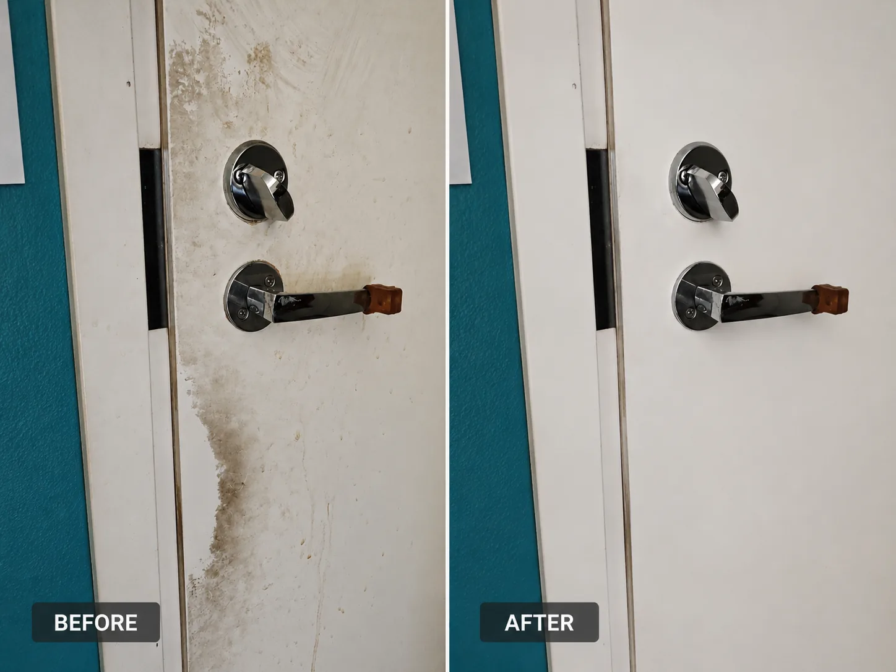

This student apartment was thoroughly cleaned before the final inspection and key handover, helping ensure it was ready for the next tenant. Our cleaning included the kitchen, bathroom, living areas, floors, surfaces and windows, leaving the apartment fresh, hygienic and inspection-ready.
"They worked like magic cleaned out everything and spot on 🤙 much recommended. …"
Moving out of a student apartment involves more than packing belongings. Student housing providers expect apartments to be returned in a clean condition before the final inspection. This move-out cleaning project in Mikontalo, Hervanta was completed to help the tenant leave the apartment ready for handover.
Our team carried out a detailed cleaning of the kitchen, bathroom, floors, doors, skirting boards, windows and all accessible surfaces. Dust, grease, limescale and everyday dirt were removed to improve the apartment's overall condition before the keys were returned.
Professional move-out cleaning can save students valuable time during a busy moving period while helping reduce the risk of additional cleaning charges after inspection. Every room was cleaned with attention to detail to create a fresh and welcoming appearance for the next resident.
Student apartments often have strict cleaning requirements before tenants move out. Kitchens, bathrooms, appliances and windows are closely checked during inspections, and missed areas can result in additional cleaning fees or deductions.
Professional cleaning helps students avoid the stress of completing a deep clean after packing and moving. With experienced cleaners handling the final cleaning, tenants can focus on relocating while knowing the apartment has been prepared to a high standard.
This project demonstrates the level of detail provided during a student move-out cleaning in Mikontalo, Hervanta. The photos and videos below show the actual cleaning results achieved before the apartment was handed back.
Countertops, sink, cabinets, splashback, appliances, shelves and floors were thoroughly cleaned to remove grease, dust and everyday dirt.
The shower, toilet, sink, mirror, tiles and all bathroom surfaces were deep cleaned and sanitized for the final inspection.
Interior windows were professionally cleaned to remove fingerprints, dust and streaks, improving natural light throughout the apartment.
Every accessible room was cleaned and prepared for key handover, helping the apartment meet student housing inspection standards.
These videos show the completed student move-out cleaning carried out in Mikontalo, Hervanta. Every clip features the actual apartment after professional cleaning and before the final inspection.
See the transformation after our professional move-out cleaning service in Mikontalo, Hervanta. This comparison highlights the difference a thorough deep clean can make before the final inspection and key handover.

Student apartment kitchens often require extra attention because of cooking residue and daily use. Cabinets, worktops, sinks, splashbacks and flooring were thoroughly cleaned to leave the kitchen fresh and inspection-ready.
Bathrooms were deep cleaned to remove limescale, soap residue and general dirt. Every visible surface was sanitized to improve hygiene and presentation.
Floors, doors, skirting boards, window sills and accessible surfaces were cleaned to create a bright and welcoming apartment for the next resident.
Windows were cleaned to remove fingerprints, dust and streaks, allowing more natural light into the apartment and improving the overall appearance during inspection.
Student apartments should be thoroughly cleaned before the final inspection. Kitchens, bathrooms, appliances, floors, windows and all living areas should be free from dirt, grease, dust and stains to help avoid additional cleaning charges.
Yes. Tyozy regularly provides professional move-out cleaning for student apartments in Mikontalo, Hervanta and nearby student housing throughout Tampere.
While the final decision always depends on the housing provider, professional move-out cleaning helps ensure the apartment is presented in excellent condition and reduces the chance of cleaning-related remarks.
Yes. Window cleaning can be included as part of the move-out cleaning package, helping leave the apartment brighter and ready for inspection.
The duration depends on the apartment size and condition. Most student apartments can be completed within a few hours.
No. We provide move-out cleaning throughout Tampere, including Hervanta, Kaleva, Keskusta, Tammela, Vuores, Tesoma, Pirkkala, Nokia, Kangasala, Lempäälä and surrounding areas.
Mikontalo is one of the largest student housing locations in Hervanta, making move-out cleaning an important part of the moving process. Whether you're graduating, changing apartments or relocating within Tampere, a professionally cleaned apartment helps make the final inspection smoother and less stressful.
Our student move-out cleaning service includes detailed cleaning of kitchens, bathrooms, floors, windows and all living areas. Every apartment is cleaned with care to help meet student housing expectations before key handover.
Besides Mikontalo, Tyozy also provides student apartment cleaning throughout Hervanta and across Tampere, serving apartments, shared accommodation and private rentals.
Professional end-of-tenancy cleaning for apartments, student housing and homes throughout Tampere.
Professional streak-free window cleaning for apartments, homes and student accommodation.
Detailed kitchen, bathroom and apartment cleaning for one-time or seasonal needs.
Flexible recurring and one-time cleaning services for homes and apartments across Tampere.
Reliable move-out cleaning designed specifically for student apartments and housing inspections.
Every room is cleaned carefully, from kitchen appliances to bathroom fixtures and living areas.
Clear quotations with no hidden fees, making it easy to budget your move.
Based in Tampere and regularly serving students living in Mikontalo, Hervanta and nearby areas.
Let Tyozy handle the cleaning while you focus on your move. We provide professional student move-out cleaning in Mikontalo, Hervanta and across Tampere, helping leave your apartment clean, fresh and ready for the final inspection.
Request your free quote today and let us help make your move-out simple and stress-free.